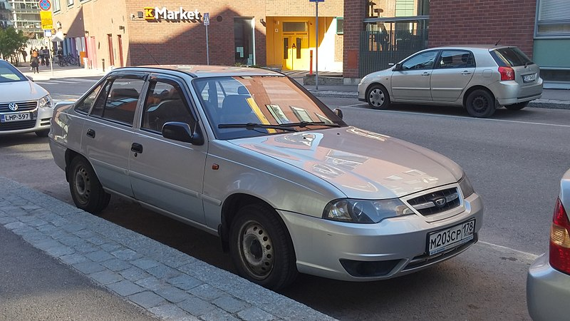

Daewoo Nexia
Вернуться назад

Хатактеристики Daewoo Nexia I:
- Стоит 30-50 тысяч
- Двигатель 1.5 литра — средний расход бензина, больший, чем у пежо, подходит как для трассы, так и для города.
- Самая дешёвая иномарка
- Коробка механика
- Самый дешёвый вариант, самые дешёвые запчасти, таких машин очень много, если что сломается, починить будет просто и дёшево
- Эту машину можно выбрать, если хочется сэкономить на покупке, ремонте и обслуживании
Вернуться назад